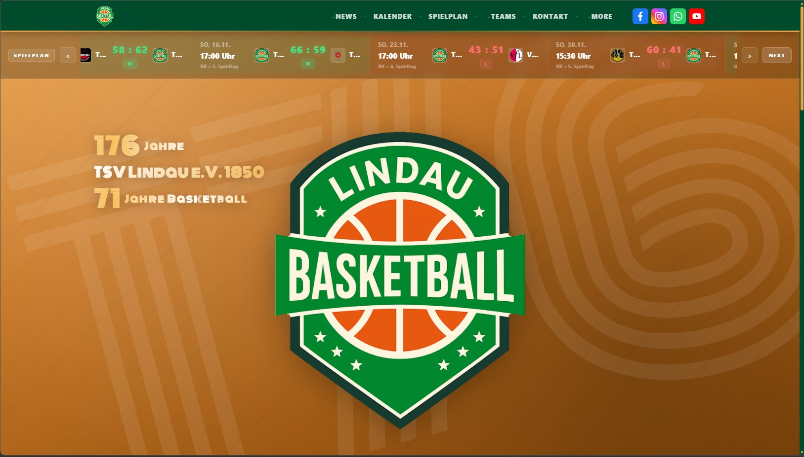
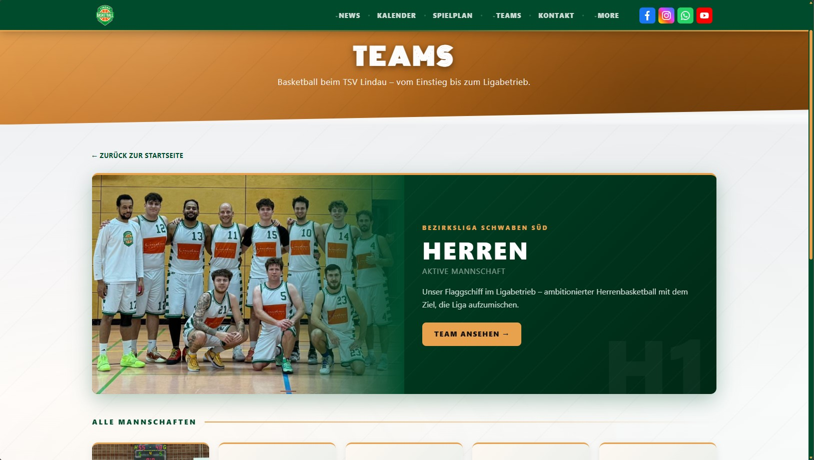
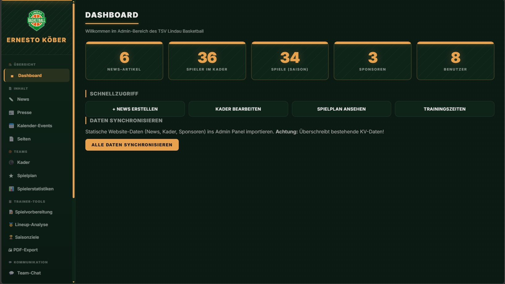

Verantwortung
Konzeption, Frontend, Backend-Architektur
Zeitraum
Seit Dezember 2025
Status
Abgeschlossen
Projektbeschreibung
Vereinswebsite für die Basketball-Abteilung des TSV Lindau 1850 e.V., vollständig auf einem serverlosen Cloudflare-Stack umgesetzt. Ziel ist eine moderne, wartbare Plattform mit klarer Informationsarchitektur und belastbarer technischer Basis.
Im Frontend kommt bewusst Vanilla JavaScript ohne Framework- oder npm-Abhängigkeiten zum Einsatz, um Supply-Chain-Risiken zu minimieren. Backend-Logik läuft als Cloudflare Worker direkt an der Edge, Daten liegen in D1 (SQLite), Medien in R2 und Caching in KV. Das Administrationspanel ist über Cloudflare Access als Zero-Trust-Proxy abgesichert.
Technischer Ansatz
- ° Vanilla JavaScript im Frontend — bewusste Entscheidung gegen npm-Dependencies zur Minimierung von Supply-Chain-Risiken
- ° Cloudflare Workers als Edge-Runtime für Backend-Logik
- ° D1 (SQLite) als Datenbank, R2 für Object Storage, KV für Caching
- ° Cloudflare Pages mit CI/CD-Anbindung als Hosting
- ° Cloudflare Access als Zero-Trust-Proxy für den Admin-Bereich
- ° Strikte Content Security Policy, durchgeführter Security Audit
Features
- ° Automatisiertes Parsing offizieller DBB-Spielberichte (PDF) über einen Worker
- ° Strukturierte Ablage der Box-Scores in D1, Darstellung von Spielplan, Tabelle und Spielerstatistiken im Frontend
- ° Admin-Panel für PDF-Upload und Stat-Verwaltung, abgesichert über Cloudflare Access (Zero-Trust)
Schwerpunkte
Security: Strikte Content Security Policy, Zero-Trust-Authentifizierung für administrative Bereiche und durchgeführter Security Audit über die gesamte Architektur.
Architektur: Konsequent serverlose Umsetzung mit Fokus auf niedrige Betriebskosten und hohe Edge-Performance. Klare Trennung zwischen statischem Frontend (Pages), Backend-Logik (Workers) und Datenebene (D1 / R2 / KV).
Projekt-Roadmap
Frontend
Backend
Aktueller UI-Stand


